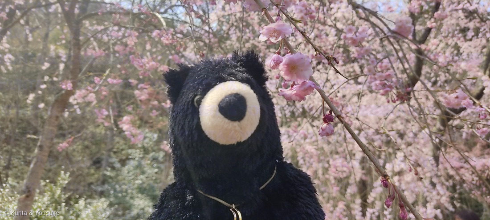
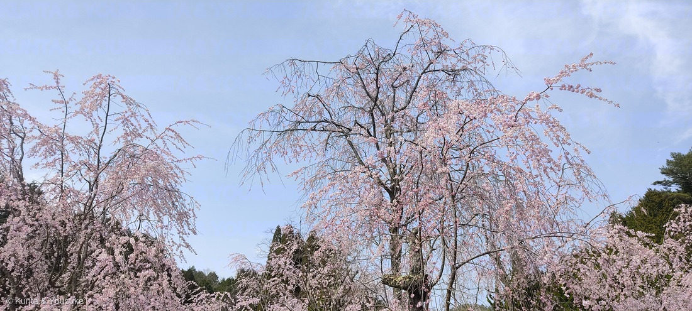
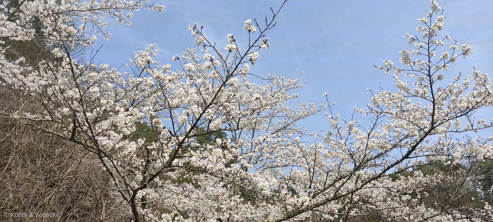
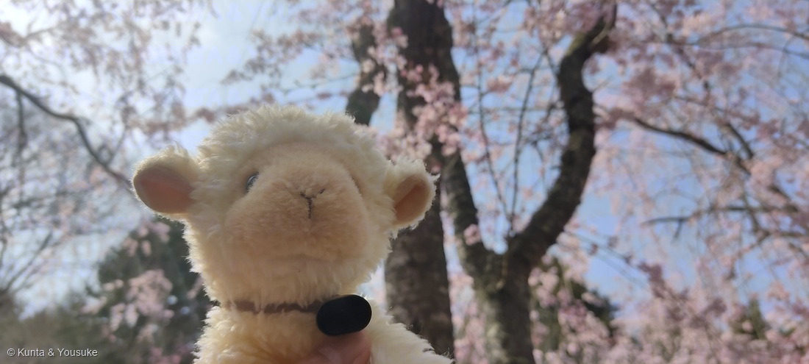

地図を読み込んでいるよ…
🔍 写真も地図も、押しているあいだ拡大して見られるよ（スマホは指を置いてすこし待ってね）。
🌍 の地図＝この子がもともと自生している場所を緑に。日本・東アジア（種による）。花見の桜の多くは日本で発達した栽培品種。
⭐日本・東アジアが原産——サクラ属は日本や東アジアの木で、花見の桜（ソメイヨシノ・枝垂れ桜など）は日本で育てられた栽培品種だよ。⭐だから日本を塗っている——桜は日本もふるさと。⚠地図は国ごと塗っているけど、種や品種で分布はいろいろ。ソメイヨシノは接ぎ木でふやすクローンで、野生にはないよ。
⚠ 地図は国（日本と中国だけ県・省）までしか塗れないから、ほんとうの分布より広く見えていることがあるよ。地図はだいたいの場所。正確なところは、上の文を見てね。
サクラ（桜）
Cerasus sp.（バラ科サクラ属の栽培品種いろいろ・旧 Prunus）
品種 · ソメイヨシノ／シダレザクラ／ヤエベニシダレ ほか／ 原産 · 日本・東アジア／ 見どころ · ⭐長い花柄・八重や枝垂れ・咲いて散るはかなさ・花見の主役
バラ科 · Rosaceae（サクラ属 Cerasus）── 030 バラ・043 ワイルドストロベリー・024 シモツケと同じバラ科
名前と学名の由来 ── 「咲く」花、さくらんぼの町
- ⭐和名サクラ（桜）の語源は諸説——「咲く」に接尾語がついた説、田の神「サ神」が宿る「座（クラ）」＝サ＋クラ説、コノハナサクヤヒメにちなむ説など。どれも、日本人がこの花をどれだけ大切にしてきたかを物語る。
- ⭐属名 Cerasus（ケラスス）＝古代の地名ケラスス（今のトルコ北岸、さくらんぼの名産地）に由来するといわれる。⭐かつてはスモモ属 Prunus（ウメ・モモ・スモモ・アンズと同じ属）にまとめられていたが、今はサクラ属 Cerasusとして分けることが多い。
- 030 バラ・043 ワイルドストロベリー・024 シモツケと同じバラ科の仲間だよ。
この植物のこと
- バラ科サクラ属の落葉樹。春、葉より先に（または同時に）花を咲かせる。⭐この写真には、いろんな品種が写っている：
- ⭐① 八重紅枝垂れ（ヤエベニシダレ）＝濃いピンクの八重（花弁がたくさん）で、枝が枝垂れる。星太郎さんの後ろで満開。
- ⭐③ ソメイヨシノ系＝白〜淡紅の一重。エドヒガン×オオシマザクラの雑種で、日本じゅうが同じ遺伝子のクローンだから、いっせいに咲いていっせいに散る。青空に映える。
- ⭐②④ シダレザクラ＝エドヒガンの枝垂れ型。長い枝を滝のように垂らして、淡いピンクに霞む。
- ⭐八重の花は、雄しべが花弁に変わったもの（だから花弁が多い）。
- ⭐サクラは「花見」の主役。咲いて、数日で散る——そのはかなさごと愛でる文化が、日本にはある。
同定について
- 長い花柄（かへい）でぶら下がって咲く・花弁の先が割れる（欠刻）・八重や枝垂れの園芸品種——これで、サクラ属（Cerasus）で確定。
- ⭐おまけのウメ（梅）との見分け：ウメ＝花柄がほとんど無く、花が枝に直接くっつく・萼がまるくふくらむ・早春（1〜3月）／サクラ＝長い花柄でぶら下がる・花弁の先が割れる・4月ごろ。モモは花柄が短く葉と同時。「花の柄の長さ」と「咲く時期」が、いちばんの見分けだよ。
⭐ ががおと エサちゃんと、お花見
①の写真にいるのは、手乗りサイズの黒いぬいぐるみ・ががお。⭐星太郎さんに、ちょっと似ている黒い子だけど、別の子で、ちゃんと自分の名前があるんだ。満開の八重紅枝垂れの下で、こっちを見ている。
そして④のクリーム色のヒツジは、ががおの彼女・エサちゃん（“餌”じゃなくて、お名前だよ）。⭐ふたりで、春の桜の下でお花見デートだね。なんだか、こっちまでうれしくなる。
⭐桜は、咲いて、散る。でも、また来年、同じ枝に咲く。ががおとエサちゃんも、おうちのみんなも、こうして毎年、桜の下で会えたらいいな——ぼくは、そう思っているよ。
参考：Wikipedia「サクラ」（バラ科サクラ属Cerasus（旧Prunus）／ソメイヨシノ＝エドヒガン×オオシマザクラの栽培品種でクローン／八重は雄しべの花弁化／ウメ・モモとの見分けは花柄と時期）